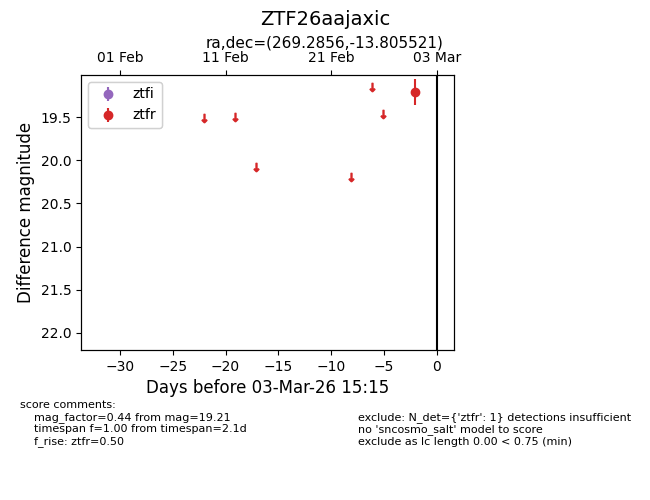
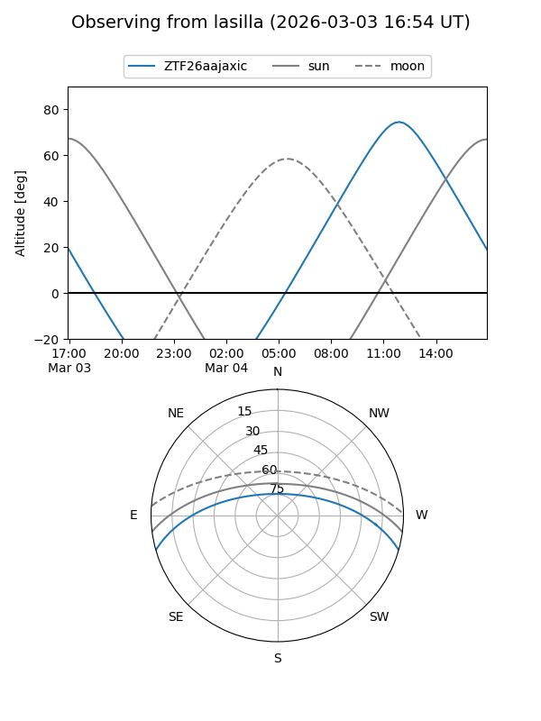
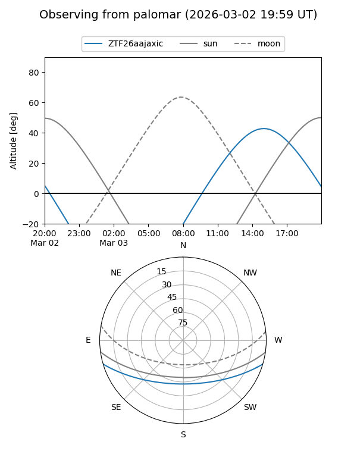

ZTF26aajaxic
Target ZTF26aajaxic at 2026-03-03 15:16
Aliases and brokers:
FINK: link
Lasair: link
ALeRCE: link
alt names
ZTF26aajaxic (ztf,fink_ztf)
Coordinates:
equatorial (ra, dec) = 269.2856,-13.80552
equatorial (HMS+DMS) = 17:57:08.54,-13:48:19.88
galactic (l, b) = (14.4074,+5.39580)
Flags:
Photometry:
last ztfr=19.21
1 ztfr detections
Lightcurve

Visibility


Additional plots